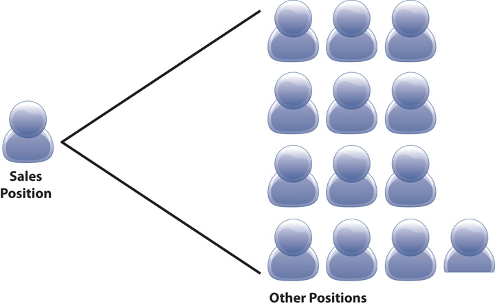
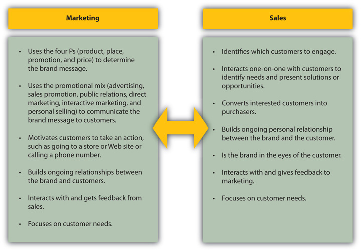

Look around. Your computer, your car, your jewelry, your eyeglasses, and your cell phone—many of the things you own—were probably sold to you by someone. Now, think about things you can’t see, like your cell phone service, your Internet service, and your car insurance. Chances are, those services were probably sold to you by someone as well. Now that you think about it, you can see that selling is involved in life in so many ways. But did you ever think about the impact that selling has on the economy?
In the United States alone, almost 16 million people were employed in jobs in sales in 2008. This number includes retail salespeople and cashiers, insurance sales agents, real estate brokers and sales agents, and manufacturing sales reps just to name a few. According to the Bureau of Labor Statistics, that number will increase to almost 17 million people employed in sales and sales-related occupations by 2018, which represents a 6.2 percent increase from 2008. That translates to one in every ten people in the United States having a job in sales.United States Department of Labor, Bureau of Labor Statistics, “Employment by Major Occupational Group, 2008 and Projected 2018,” Economic News Release Table 5, 2009, http://www.bls.gov/news.release/ecopro.t05.htm (accessed May 6, 2010). Other estimates, such as the Selling Power Magazine’s annual report of America’s Top 500 Sales Forces in 2008, puts the total number of salespeople at the top 500 companies at over twenty million for the first time.“Selling Power 500: America’s 500 Largest Sales Forces,” Selling Power, October 2008, 52.
But the bigger story is the fact that many companies sell their products and services globally. Multinational corporations (MNCs)Large companies that have operations, including selling, in multiple countries., large companies that have operations, including selling, in several countries,[citation redacted per publisher request]. such as Procter & Gamble, Dell, Reebok, and Kraft Foods, employed 32 million workers in 2007.Bureau of Economic Analysis, International Economic Accounts, “Summary Estimates for Multinational Companies: Employment, Sales, and Capital Expenditures for 2007,” April 17, 2009, http://www.bea.gov/newsreleases/international/mnc/2009/mnc2007.htm (accessed June 5, 2009). Although not all these employees are engaged in selling, the number helps provide some sense of relativity as to the proportional impact of international business. Most large MNCs have offices (including sales offices) in many foreign countries. This provides the company with the opportunity to become integrated into the culture, customs, and business practices of each country in which it has operations.
A large number of MNCs generate a significant portion of their sales from countries outside the United States. If you’ve traveled outside the United States, think about the products you saw. Companies such as Coca-Cola, eBay, Gillette, KFC, and Starbucks have a significant presence in foreign countries. Many companies expand selling to international markets for several reasons, including slow population growth in their domestic country, increased competition, opportunity for growth and profit, and sometimes, out of sheer necessity due to the fact that globalization is rapidly changing the economic landscape.George E. Belch and Michael A. Belch, Advertising and Promotion: An Integrated Marketing and Communications Perspective, 8th ed. (New York: McGraw-Hill Irwin, 2008), 653–54.
In the past, expansion to foreign markets was limited to those corporations that could make the investment required to locate offices and operations abroad. The Internet, however, has provided that same opportunity to small- and medium-sized companies, so that they may sell products and services internationally. Why would small companies want to do this? With only a one-to-five proportion of Internet users living in the United States, almost 80 percent of Internet users live in places abroad; thus, there is a much larger market to be found by way of the Internet. Before you take your lemonade stand global, however, remember that selling internationally is not as simple as just setting up a Web site. Language, shipping, currency exchange, and taxes are just some of the costs and considerations necessary for selling products and services internationally via the Internet. To help companies overcome these barriers of doing business internationally, organizations such as e-commerce service provider FiftyOne offer technology solutions that manage these important components of international selling.FiftyOne, http://www.fiftyone.com/solution (accessed June 5, 2009).
Think about the possibilities. When companies such as Overstock.com want to sell globally, companies like FiftyOne have a selling opportunity.Caroline McCarthy, “Overstock.com Will Extend Reach to Canada, Europe,” CNET News Blog, http://news.cnet.com/8301-10784_3-9933344-7.html (accessed June 5, 2009). In other words, selling products and services can generate more opportunities for selling other products and services in the future. When companies (FiftyOne is a perfect example) and salespeople think creatively and see the environment through the customer’s eyes, they can identify selling opportunities that might not otherwise exist. This is a basic tenet of selling, both domestically and internationally.
The Internet has been a game changer for selling in many ways. Just like the Internet expands the reach of a company to virtually anywhere in the world, it also provides customers with access to information, products, and services that they never had before. In some industries, the Internet has virtually eliminated the need for a salesperson. Travel agents are no longer the exclusive providers of reservations and travel plans. Music stores are almost extinct. Newspaper want ads have almost vanished. In other industries, the relationship of the salesperson and customer has changed dramatically. The power has shifted from the seller to the buyer. Take, for example, the auto industry. It used to be that when you wanted to buy a car, you went to a car dealership. The salesperson would show you the cars, take you out on a test drive, and then negotiate the selling price when you were ready to buy, holding the dealer invoice close to the vest. Today, customers may e-mail a car dealership to set up an appointment to drive a specific car after they have researched different models of cars including features, benefits, competitive models, editor and customer reviews, competitive pricing, and dealer invoice pricing. In some cases, the customer may know more than the salesperson.Robert McGarvey and Babs S. Harrison, “The Human Element: How the Web Brings People Together in an Integrated Selling System,” Selling Power 20, no. 8, http://www.sellingpower.com/content/article.php?a=5566 (accessed March 16, 2010).
Sales organizations are embracing a movement called Sales 2.0A term used to describe the role of the next generation of the Internet in the selling process including social networking, “mash-ups,” communities, and collaboration.. You may have heard of Web 2.0, the second generation of the Internet, which includes interactivity, community, and on-demand information. Sales 2.0 is a term that appropriately describes a new way of thinking about the role of the Internet in the selling process as it encompasses the impact of constantly changing technology and multiple electronic devices, “mash-ups” of different sources of information, and user-generated content on sites like Facebook, LinkedIn, YouTube, and Twitter. According to Tim Sullivan, director of intellectual property and information for Sales Performance International, these Internet-based changes pose new implications for sales. Educating customers is no longer the primary function of the salesperson. Customers are actively involved in engagement, interaction, and collaboration to seek information. Salespeople need to understand the power of collaboration both inside their organization and with their customers, so that they may participate in the online conversation, enabling them to better deliver value. Just as customers use blogs, wikis, and social networking as tools to learn about a product, companies can use these tools to learn about customers (and what they want and need). It’s a new mind-set and new technology tools are constantly changing the landscape—salespeople must be prepared to adjust their reactions accordingly.Heather Baldwin, “What Does Sales 2.0 Mean for You?” Selling Power Sales Management eNewsletter, March 3, 2008, http://www.sellingpower.com/content/newsletter/issue.php?pc=801 (accessed March 16, 2010). The shift of power to the customer is underscored by Gerhard Gschwandtner, founder and CEO of Selling Power, Inc. According to him, “Sales 2.0 gives the customer a 360-degree view of the company and provides sales organizations with a variety of tools that help manage that two-way communication process.”Selling Power, Sales 2.0 Newsletter, September 18, 2008, http://www.sellingpower.com/content/newsletter/issue.php?pc=868 (accessed June 21, 2010). Sales 2.0 takes the selling process to the next generation.
Whiteboard Session with David Thompson, CEO of Genius.com
Sales 2.0 and how it works.
http://www.bnet.com/2422-13731_23-187203.html
Source: BNET
Sold.
It’s a deal.
Let’s shake on it.
Sign on the dotted line.
You’ve got the job.
Those are the words that signal success in selling. They seem simple, but according to Gerry Tabio, bringing a saleThe activity of selling a company’s products and services.BNET Business Dictionary, “Sales,” BNET, http://dictionary.bnet.com/definition/Sales.html?tag=col1;rbDictionary (accessed June 5, 2009). to fruition is “not just about celebrating the sale; it’s about celebrating the growth of the customer.”Gerry Tabio, “How to Create Ideas That Sell,” presentation at Greater Media Philadelphia Sales Meeting, Philadelphia, PA, May 15, 2009. The most successful companies work to build and sustain relationships with the customer at every touch pointAny point in which the customer comes in contact with a company, such as in person, by phone, by e-mail, Web site, invoice, advertising, and more., any way in which the company comes in contact with the customer, and consider selling the job of everyone in the organization. In other words, although there are specific functional departments such as sales, marketing, operations, human resources, finance, and others, everyone in the organization is focused on the customer. This is called a customer-centric organizationAll employees are focused on anticipating and meeting the needs of the customer..Barry Welford, “7 Habits of a Truly Customer-Centric Selling Organization,” SMM Internet Marketing Consultants Newsletter 13, http://www.smmbc.ca/newsletter-13.htm (accessed June 5, 2009).
You might wonder why all companies aren’t considered customer-centric. After all, if they were in business to sell products and services to customers, it would make sense that they would be customer-centric. However, you have probably encountered companies that aren’t really focused on the customer. How many times have you heard this message while you were on hold to talk to a salesperson or customer service representative, “Your call is important to us. Please stay on the line for the next available representative”? Being on hold and hearing a recorded message hardly makes you feel as if you are important to the company.
Being customer-centric means insisting on accountability. Although everyone is focused on the customer, every employee is part of a department or function. Each department has goals and accountabilities. In a true customer-centric organization, the departments work together to satisfy the needs of the customer and achieve the financial objectives of the company. Most companies have core functions or departments such as sales, customer service (sometimes it is included as part of the sales department), marketing, operations, finance, human resources, product development, procurement, and supply chain management (also called logistics). Departments such as finance and human resources are called support (or staff) functionsA department that provides services that support those that are on the front lines with customers, such as human resources, finance, and marketing. This department is also called a staff function. since they provide support for those that are on the front lines such as sales and customer service (these departments are also called line functionsA department that is part of the daily operations of a company such as sales and customer service. as they are part of a company’s daily operations).BusinessDictionary.com, “Staff Function,” http://www.businessdictionary.com/definition/staff-function.html (accessed June 8, 2009). In a customer-centric organization, the focus on the customer helps prevent organizational “silos” (i.e., when departments work independently of each other and focus only on their individual goals).
The sales department is the heartbeat of every company. According to Selling Power Magazine, the manufacturing and service companies listed on its “Power Selling 500 Report” generate $6.7 trillion dollars in sales annually. Each salesperson supports an average of 12.9 other jobs within the company.“Selling Power 500: America’s 500 Largest Sales Forces,” Selling Power, October 2008, 53. This means that the level of sales that is generated by each salesperson actually pays for the roles in human resources, marketing, operations, and other departments. It makes sense that the salespeople fund the operations of the company. After all, it is a salesperson with whom you interact when you buy a Nissan Cube, lip gloss at Sephora, or an interview suit at Macy’s. The people in the sales department “ring the cash register” (whether the business has a cash register or not). They are responsible and accountable to deliver sales to generate revenue and profit, which are required to operate and to invest in the company. In fact, the sales department is considered so important that even in this difficult economy, companies should continue to fill open sales positions even if they are not hiring in other departments, according to Dennis J. Ceru, a professor of entrepreneurship at Babson College and the president of Strategic Management Associates, a consulting firm in Wellesley Hills, Massachusetts.Elaine Pofeldt, “Empty Desk Syndrome: How to Handle a Hiring Freeze,” Inc., May 1, 2008, http://www.inc.com/magazine/20080501/empty-desk-syndrome.html (accessed June 7, 2009). Without a healthy and strong sales department, companies can wither and die.
Figure 1.4
Each salesperson generates enough revenue and profit to support 12.9 jobs in the average company.
Role Reversal
How would you feel if you wanted to buy a new car, but every sales rep you called was in a meeting?
Brad Lathrop, a sales professional, learned the hard way about how a customer feels in this situation. When he was in the market for a new car, he called several dealerships. Every receptionist told him that all the salespeople were in meetings. The receptionist at the last dealership he called said the same thing, but added that if Brad would hold for a minute, she would get a salesperson out of a meeting. It’s no surprise that was the dealership where Brad eventually bought the car and learned a powerful lesson about selling.
So you might be wondering, if the sales department interacts with customers, what exactly does the marketing department do? That’s a great question. Some people use the terms in tandem—sales and marketing—to refer to sales. Some people use the terms interchangeably and refer to marketing as sales. It’s no wonder that it confuses so many.
According to the American Marketing Association, “marketingThe activity of creating communicating and delivering brand messages to customers. is the activity, set of institutions, and processes for creating, communicating, delivering, and exchanging offerings that have value for customers, clients, partners, and society at large.”American Marketing Association, “About AMA,” October 2007, http://www.marketingpower.com/AboutAMA/Pages/DefinitionofMarketing.aspx?sq=definition+of+marketing (accessed June 6, 2009). In other words, it is the role of the marketing department to use the four Ps of the marketing mix (product, place, promotion, and price) to determine the brand message, which is ultimately communicated to customers.Michael R. Solomon, Greg W. Marshall, and Elnora W. Stuart, Marketing: Real People, Real Choices (Upper Saddle River, NJ: Pearson Prentice Hall, 2008), 380. Then, the marketing department uses the elements of the promotional mix of advertising, sales promotion, public relations, direct marketing, interactive marketing, and personal selling to get the word out to customers.George E. Belch and Michael A. Belch, Advertising and Promotion, 8th ed. (New York: McGraw-Hill Irwin, 2008), 10. Marketers seek to motivate prospective customers to purchase by driving them to a Web site, store, phone, event, or another related, desired action. Essentially, marketing builds relationships between customers and the brand. When you see an online ad for Best Buy, get a text message about the new release of Terminator 2: Judgment Day on Blu-ray, call the 800 number to check on your Rewards Zone point balance, post a comment on the Best Buy Facebook page, respond to a tweet from Best Buy on Twitter, see a newspaper insert or an ad on television, or read about the opening of a new store near year you, these are all examples of marketing. They are designed to encourage you to engage with the brand and encourage you to take an action—visit the store, go to the Web site, call the 800 number, or tell your friends about the brand.
When you go into the store or visit the Web site, it’s the sales department that takes over. A salesperson will speak with you (either in person in the store, online with live chat, or by phone) to determine what you need and to help you make the best decision by communicating product information (this printer is wireless), service information (we can deliver that tomorrow), warranty information (it has a 90-day manufacturer warranty), and other pertinent facts. The salesperson extends the relationship that was established with the marketing contacts and makes a personal connection with you. If you have a good experience, your relationship with Best Buy gets even better, and you are more likely to shop there again and tell your friends.
At times, however, sales and marketing don’t play well together. When organizations are not customer-centric, the departments may appear to have separate or conflicting goals. Marketing may feel that sales doesn’t follow up on prospective customers, or perhaps sales feels that the marketing efforts are focused on the wrong customers. To understand more about the relationship between sales and marketing, watch Chip Terry, vice president and general manager of sales intelligence at Zoom Info, talk about how the two functions are aligned (and sometimes how they may not be aligned):
Chip Terry Interview
How sales and marketing work together.
http://www.bnet.com/2422-13723_23-222675.html
Source: BNET
Figure 1.5 Marketing and Sales: How They Work Together
In addition to closing the sale (when the customer purchases the product or service), the salesperson has a very important role in the marketing process. Because the salesperson (in the store, online, or on the phone) is a primary touch point and a personal interaction with the customer, the salesperson is the brand in the eyes of the customer. According to Dr. David A. Shore of Harvard University, “The sales force is the most visible manifestation of the brand. Salespeople need to say with a singular voice, ‘This is who we are, and, by extension, this is who we are not.’ The critical element that power brands have is trust, and a sales force needs to become the trusted advisor to the customer.”Gerhard Gschwandtner, “How Power Brands Sell More,” Selling Power 21, no. 3, http://www.sellingpower.com/content/article.php?a=5705 (accessed March 16, 2010).
So now you can see that marketing and sales work hand-in-hand: one develops the brand and the other assumes the image of the brand. Neither works without the other, and the relationship between the functions must be transparent to the customer. There’s only one brand in the eyes of the customer, not two departments. When marketing and sales work well together, the customer experience is seamless.